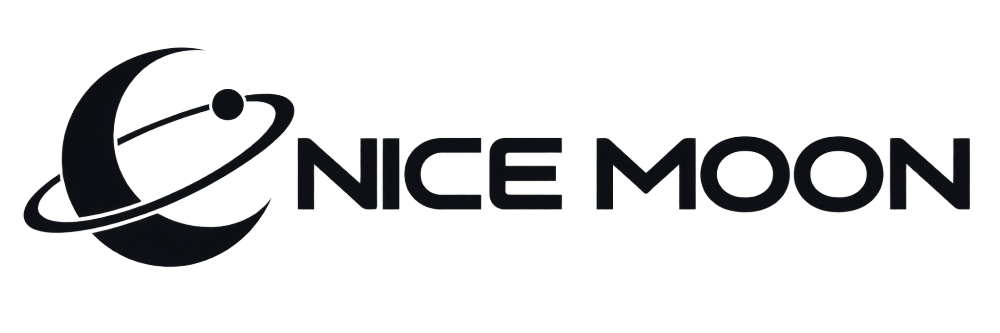

LUNAR LOCAL FOOD
달의 돌로 만든
현지 미식
월석 수프와 달 흙 비빔밥. 달의 재료와 조리법으로 완성한 로컬 다이닝.
PREPARING YOUR FLIGHT
0%

ABOUT NICE MOON 01
NICE MOON은 달을 바라보는 시대를 끝내고,
달에서 살아보는 시대를 시작합니다.
지구와 달을 잇는 1,000대의 우주선. 거대한 우주가 이제 가장 가까운 휴양지가 됩니다.
달의 앞면부터 지구에서 볼 수 없었던 뒷면까지. NICE MOON은 이동, 숙박, 미식과 탐험을 하나의 여정으로 설계합니다. 낯선 세계를 누구나 편안하게 경험할 수 있도록 5,000여 명의 전문가가 달에서 함께합니다.
WHAT WE DO 02
달에서만 가능한 네 가지 경험.
LUNAR LOCAL FOOD
월석 수프와 달 흙 비빔밥. 달의 재료와 조리법으로 완성한 로컬 다이닝.
CRATER SAND RIDING
낮은 중력과 거대한 경사면에서 경험하는, 지구에는 없는 속도감.
ALIEN ENCOUNTER
안전하게 설계된 교류 프로그램으로 미지의 존재와 만나는 특별한 하루.
THE FAR SIDE
지구에서는 영원히 보이지 않는 풍경. 오직 NICE MOON에서 출발합니다.
RESERVATION 03